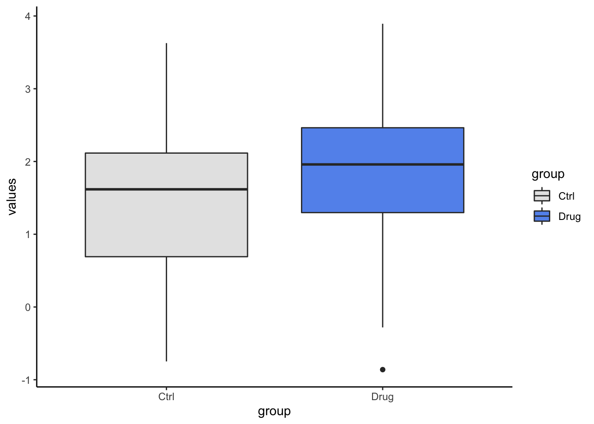
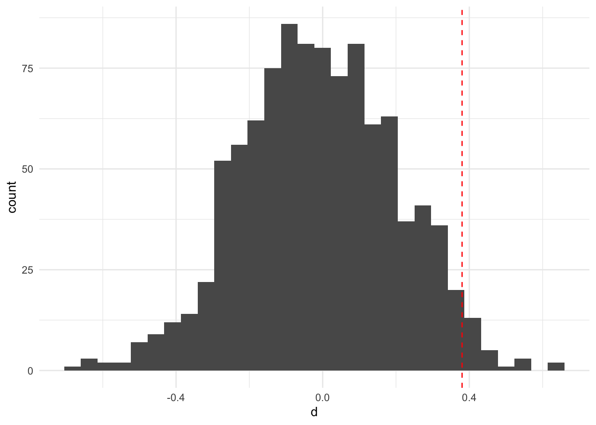

library(tidyverse)
set.seed(112233)
my_data <- tibble(values = c(rnorm(50, 1.5, 1),
rnorm(50, 1.8, 1)),
group = rep(c("Ctrl","Drug"),
each = 50))
my_data %>%
ggplot(aes(x = group,
y = values,
fill = group))+
geom_boxplot()+
scale_fill_manual(values = c("grey90",
"cornflowerblue"))+
theme_classic()
values across groupsThe calculations we will look at below will be about the mean difference between our two groups, and therefore our observed value in this case will be the mean difference. Use the pull() function to convert a one column data frame to a vector.
(mean_diff <- my_data %>%
group_by(group) %>%
summarise(m = mean(values)) %>%
summarise(d = diff(m)) %>%
pull())## [1] 0.3802851
Randomization tests, just like bootstrapping, belong to the larger category of statistical tests referred to as resampling methods. Randomization is used to create sampling distributions under the null hypothesis that no group differences exist in the population. This is done by breaking up the true relationship between sample data groups, by shuffling individuals to the different groups randomly. Groups sizes are maintained, but for each randomization the individuals, and hence values, belonging to the different groups will vary. On average, this will result in no difference between the groups and therefore the sampling distribution will be centered about zero and represent the possible observed values under the null hypothesis that no real population group difference exists. The code below shows how put together a randomization test for group mean differences, and is statistically equivalent to a two-sample t-test.
rand_mean_diff <- function(data, col, group){
data %>%
transmute({{group}},
shuffled = sample({{col}}, replace = FALSE)) %>%
group_by({{group}}) %>%
summarise(m = mean(shuffled)) %>%
summarise(d = diff(m))
}
rand_mean_diff(my_data, values, group)## # A tibble: 1 x 1
## d
## <dbl>
## 1 0.0994
res <- map_dfr(1:1000, ~rand_mean_diff(my_data, values, group))
res %>%
ggplot(aes(x = d))+
geom_histogram()+
geom_vline(xintercept = mean_diff,
color = "red",
linetype = "dashed")+
theme_minimal()
res %>%
summarise(p_value = mean(abs(d) >= abs(mean_diff)))## # A tibble: 1 x 1
## p_value
## <dbl>
## 1 0.065
t.test()t.test(values~group, data = my_data)$p.value## [1] 0.06963637
When constructing confidence intervals for mean differences using bootstrapping, we sample with replacement within our groups and calculate the mean difference of these now bootstrapped groups. By using the group_by() function before sampling, we make sure the bootstrapping is being done in the groups separately. Also, the grouping is maintained when we get to the summarise() step, meaning that mean(shuffled) will calculate the mean per (bootstrapped) group.
boot_mean_diff <- function(data, col, group){
data %>%
group_by({{group}}) %>%
transmute({{group}},
shuffled = sample({{col}}, replace = TRUE)) %>%
summarise(m = mean(shuffled)) %>%
summarise(d = diff(m))
}
res2 <- map_dfr(1:1000, ~boot_mean_diff(my_data, values, group))
res2 %>%
summarise(lowerCI = quantile(d, prob = 0.025),
upperCI = quantile(d, prob = 0.975)) ## # A tibble: 1 x 2
## lowerCI upperCI
## <dbl> <dbl>
## 1 -0.0211 0.751
t.test()t.test(values~group, data = my_data)$conf.int## [1] -0.7916992 0.0311290
## attr(,"conf.level")
## [1] 0.95